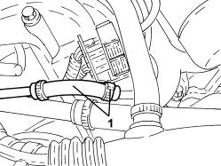
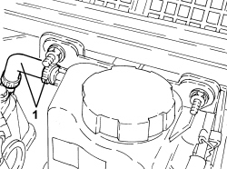
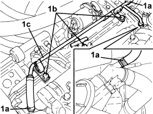

1088D57 ENGINE COOLANT RETURN PIPE TO SUPPLY RESERVOIR - R.R.
- Path
- Procedures > 10 ENGINE > 1088 ENGINE COOLING > 1088D COOLANT PIPES AND HOSES > 1088D57 ENGINE COOLANT RETURN PIPE TO SUPPLY RESERVOIR - R.R.
- Kind
- repair procedure (removal / refitting; the operation number is the code)
- Applies to
- engines: 2.4 JTD 20v, 3.2 JTS; all production periods
- Interactive page
- https://sloeber94.github.io/elrnDB-aBrrSpdr/en/#/946002020
Applies to: engines: 3.2 JTS; all production periods
 Removing
Removing
 Refitting
Refitting1. Loosen the band and disconnect the engine coolant return pipe to the supply reservoir (degassing) from the water pump rigid return pipe.

Applies to: engines: 3.2 JTS; all production periods
1. Loosen the band and disconnect the engine coolant return pipe to the supply reservoir (degassing) from the reservoir.
- Remove the engine coolant return pipe to the supply reservoir (degassing).

Applies to: engines: 3.2 JTS; all production periods
Refitting
Removing- Place the engine coolant return pipe to the supply reservoir (degassing) in position.
- Connect the engine coolant return pipe to the supply reservoir (degassing) to the reservoir and secure it using the band.
- Connect the engine coolant return pipe to the supply reservoir (degassing) to the rigid water pump return pipe and secure it using the band.
Applies to: engines: 2.4 JTD 20v; all production periods
Removing
RefittingOp. 1016A10 SOUND-PROOFING COVER - R.R
1. Loosen bands (1a), undo bolts (1b) and remove coolant return pipe to engine coolant reservoir (1c).

Applies to: engines: 2.4 JTD 20v; all production periods
Refitting
Removing- Place the coolant return pipe to the engine coolant reservoir in position and tighten the bolts and the bands.